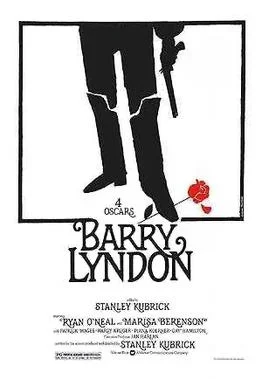

_Cropped.jpg){kind=link}
 Explore film ↗
Explore film ↗A Clockwork Orange
Stanley Kubrick
DIRECTOR PROFILE
Stanley Kubrick (July 26, 1928 – March 7, 1999) was an American filmmaker and photographer.

LIFE & CAREER
Stanley Kubrick (July 26, 1928 – March 7, 1999) was an American filmmaker and photographer. A prominent figure of the New Hollywood era, Kubrick is regarded as one of the greatest and most influential filmmakers. His films spanned a number of genres and gained recognition for their attention to detail, innovative cinematography, extensive set design, and dark humor.
Adapted excerpt from Wikipedia, CC BY-SA 4.0. Pronunciation notes omitted.
Read the full biographyImage: Columbia Pictures. Source & rights: Public domain ↗.
Profile reference: Director background ↗
Open this director checklist ↗
A selection of this director’s films available in the archive.
Explore film ↗Stanley Kubrick
 Explore film ↗
Explore film ↗Stanley Kubrick
 Explore film ↗
Explore film ↗Stanley Kubrick

1975 · Stanley Kubrick